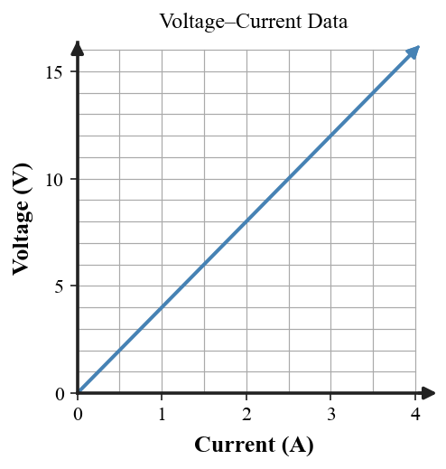
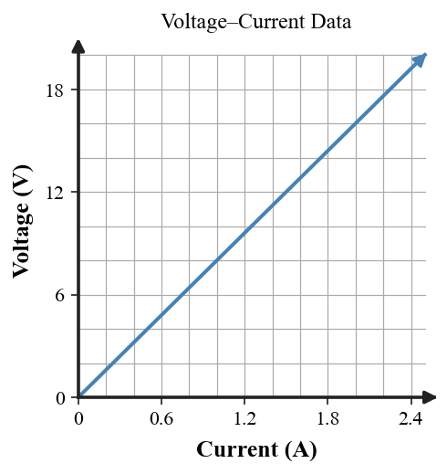
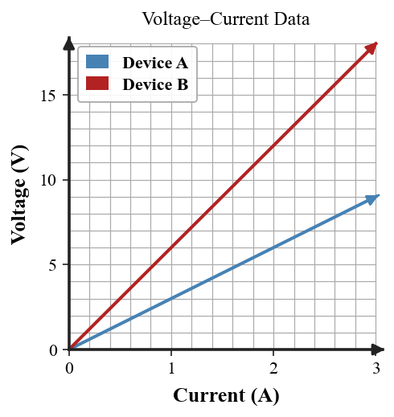
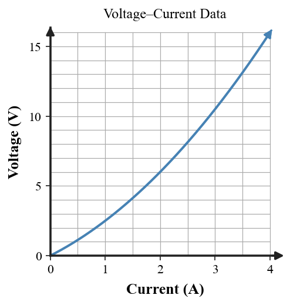
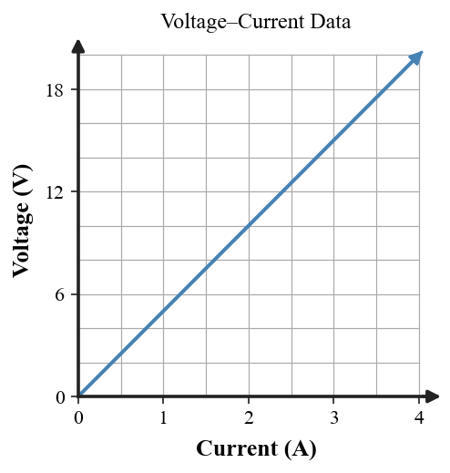
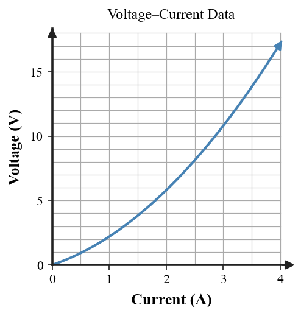
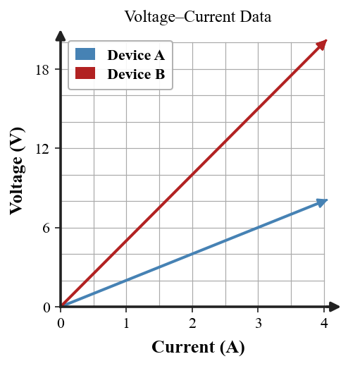

Unit 7 DOK 3.3 Ohm’s Law Graph Explanation V8
Name:
Show work and mark answers clearly.

Decide whether the graph supports the claim “this device has constant 4-Ω resistance.” Use quantitative evidence.

Use the slope $\Delta V/\Delta I$ to determine the resistance. Explain how the straight line through the origin supports an ohmic model.

Determine the resistance from the graph. Compare what a steeper V–I line means physically.

Two devices are shown. Determine which has greater resistance and calculate each resistance from slope.

The curve is not a straight line. Calculate $V/I$ at approximately 1 A and 3 A and explain whether resistance is constant.

Use two well-separated points to estimate resistance. Explain why one point alone is weaker evidence for constant resistance.

A device’s V–I plot bends upward. Explain what happens to effective resistance as current increases.

Compare the two straight lines. Which device would carry more current at the same voltage, and why?
Decide whether the graph supports the claim “this device has constant 4-Ω resistance.” Use quantitative evidence.